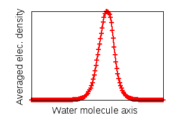

This lesson has been created for the current stable version.
Charge Analysis: H2O molecule
The purpose of this lesson is to introduce the concept of partitioning of the continuous charge density obtained by solving the Schrödinger equation among the atoms of the system. It is done according to the Bader's "Quantum Theory of Atoms in Molecules", and then the partial charge and polarization of individual atoms are determined.
Plotting charge density

For a charge analysis you need the electronic charge density to be output
after the last wave function convergence.
To do this, set the third number of the eleventh line of input.dft to 1:
0 0 1 InputPsiId, output_wf, output_grid
By setting the output_grid to "1" the electronic charge density is requested to be written in the
.cube format
(whereas "2" would mean that different scalar potentials (Hartree, ionic and local) are written as well.
Whenever a cube file is generated, BigDFT outputs also the corresponding averaged values over xy, xz and yz planes.
Exercise: run BigDFT for the H2O molecule as in posinp.xyz.
The other files needed for this task are:
the pseudo-potentials psppar.O and psppar.H
and the input file input.dft;
Note that a high resolution grid of hgrid=0.2 is used here. In the following the reason of this choice will be clearified.
Once the calculation is terminated, make a 3D plot of the electronic charge density
data/electronic_density.cube at some isosurfaces, e.g. 0.8 eao-3
(you can do it with v_sim ).
Draw a few cutting planes with coloured map of density.
Charge partitioning between atoms

If a spatial basis set like wavelets or plane-waves is used in solving the Schrödinger equation, the wavefunction belongs to the whole system but not to individual atoms. In this case, defining boundaries which partition the electronic charge density (and any other quantity derived from it) between the atoms can be useful. Bader's theory of "atoms in molecules" seems to provide a reliable definition to this aim; It exploits the topological properties of the charge density to partition the space in several regions, each one hopefully surrounding a nucleus. The boundary of each Bader volume is defined as the surface through which the charge density gradient has a zero flux. To analyze the charge density from BigDFT we use the implementation by Graeme Henkelman's group (with some modifications); On their homepage you can find details of their algorithm as well as their freely available code.
Hint: When not doing all-electron calculations, Bader analysis should be done with special care. In BigDFT the core electrons are effectively represented by pseudopotentials. If the pseudopotential is too soft, then no density maximum might be found at the nucleus position and the Bader code may miss it. In this case producing the density file over a very dense grid mesh can help the Bader code to capture the maxima. The denser grid mesh will increase also the overall accuracy of the Bader analysis.
Exercise: run the executable (bigdft-root)/src/tools/bader/bader. By default it looks for the file
electronic_density.cube in the working directory (data/ in this case), although one can pass the
name of the cube file as argument (bader [ cubefile ]).
This post-processing program takes a while depending on the box size and grid resolution.
Several output files are generated, including dipole.dat in which
you can see the partial charge of each atom:
Atoms coordinates: atom# coordinates: X Y Z CHARGE: core electronic net -------------------------------------------------------------------------------------------------- 1 7.3000 7.3003 7.2432 +1.00000 -0.40727 +0.59273 2 7.3000 8.4153 8.7003 +6.00000 -7.18542 -1.18542 3 7.3000 7.2997 10.1568 +1.00000 -0.40731 +0.59269 --------------------------------------------------------------------------------------------------
Note the net charge associated to the Oxygen and Hydrogen atoms. The large charge transfer between the atoms makes water molecules to be dipolar.
Hint:
You may want to visualize the Bader's boundaries between atoms as in the side figure. To do this use the argument -p all_atom
when you run bader, then one cube file is generated for each atom
which has zero values at grid points do not belong to the corresponding atom.
Indeed there is no clear boundary between atoms and therefore the results depend on the definition. Voronoi partitioning and Mulliken population charge analysis are two other common methods in this context, although those are not based on density analysis. The former is a geometrical method to assigning each elementary volume of charge to its nearest atom while the latter projects the wave-function to the atomic orbitals. With such an atomic-centered basis set, the charge associated to a given atom can be obtained directly from the corresponding wavefunction of that atom. However, this is not quite accurate because of e.g. overlapping of the wave functions of neighboring atoms.
Now you calculate the partial charges from these two methods and compare the results.
Vonoroi analysis is possible by bader code and Mulliken population charge analysis can be done in BigDFT.
Exercise:
Run bader -c voronoi where using -c voronoi parameter means to perform the Voronoi analysis in the end.
Compare the partial charges on each atom obtained by the two methods.
According to the Voronoi method, do the H atoms take some electronic charge from the O atom or give some to it?
It is not surprising that Voronoi polyhedra do not contain the correct charges of atoms with covalent bonds since no difference between different atomic types is considered. Although it may work well for ionic systems.
Run BigDFT again after you changed the eleventh line in input.dft as
10 0 1 InputPsiId, output_wf, output_grid
With 10 as InputPsi, BigDFT will do a Mulliken analysis once the wavefunction is converged. Find the "Mulliken analysis" part in the output of BigDFT and compare the decomposed charge with the two other methods.
In this method, you can also find the electronic charge decomposed between different orbitals and spins. The latter provides individual atomic magnetic moments if spin-polarized calculation is done.
Total and partial electric dipole moments

As mentioned earlier, in addition to a cube file, the averages along the 3 axes are also written out by BigDFT.
In the present case you can find the file electronic_density_avg_x which contains the projection of the
electronic density along the x axis and two others along the y and z axes.
A plot of these averages shows how the electronic density is concentrated in each planar layer.
We have already determined how much negative charge is transferred from H's to O by means of the Bader method.
A considerable dipole moment due to this charge displacement is expected.
Furthermore, since the charge inside each atomic region is not regularly distributed an intra-atomic polarization
dipole moment can be associated to each atom.
Exercise:
Find the "Electric Dipole Moment" of the water molecule in the output of BigDFT.
It is 0.727 in eao while the experimental value is 0.728 eao (or 1.85 Debye).
Make a vectorial visualization of the intra-atomic dipole moments
output in dipole.dat.
Atomic polarization dipole-moments with respect to the corresponding nuclei positions [e.a0] atom# Intra-atomic: Px Py Pz |P| --------------------------------------------------------------------------------------- 1 -0.000003 0.113755 0.128914 0.171927 2 -0.000261 0.368147 0.000188 0.368147 3 -0.000002 0.113715 -0.128937 0.171918 ---------------------------------------------------------------------------------------
Do the intra-atomic polarization dipole moments sum up to the overall dipole moment?
In order to calculate the overall dipole moment, you should consider also
the contributions from inter-atomic charge transfer and the (pseudo) nuclei charge. These two contibutions sum up to
∑qiri
where the core positions ri and net charges qi are found in dipole.dat.